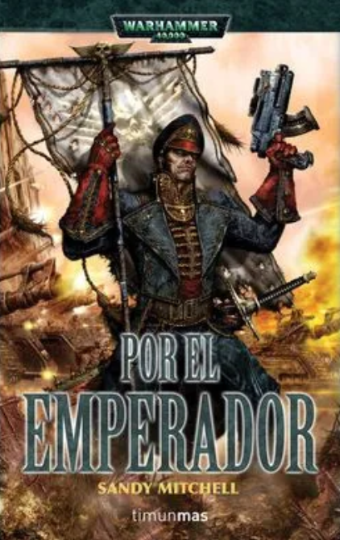
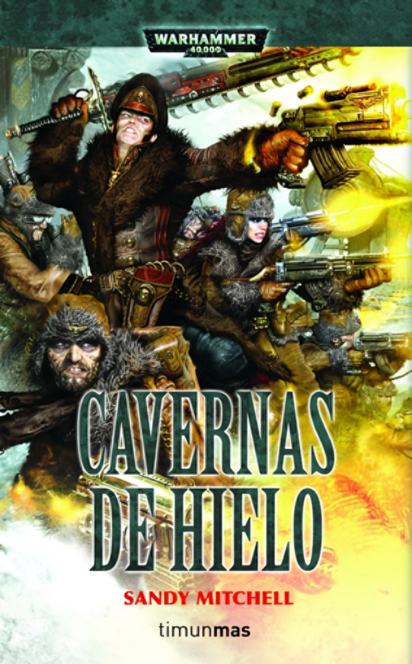
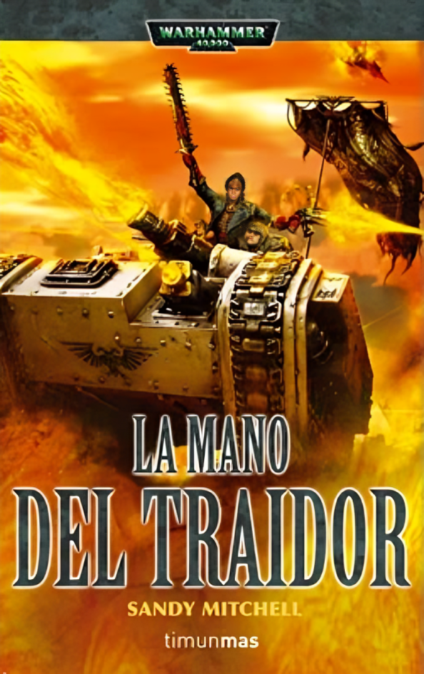
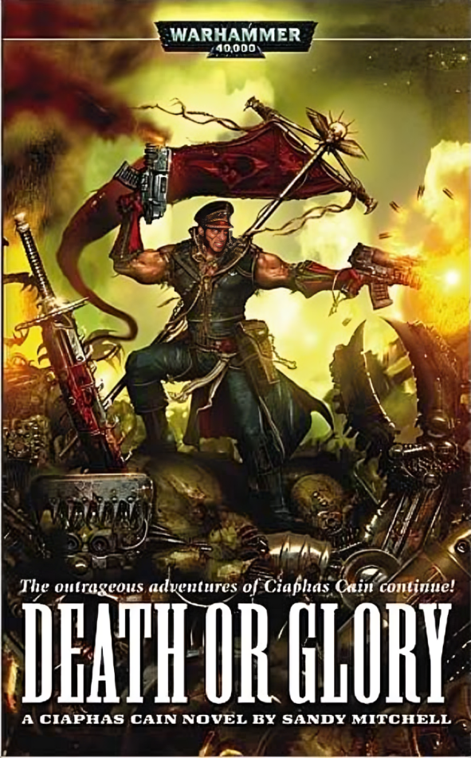

Ciaphas Caín [ Trilogia + 1] -Recopilación

Libro [ Por el Emperador! ]:
"El Comisario Ciaphas Cain, famoso por su cobardía heroica y su habilidad para sobrevivir a las situaciones más peligrosas, es enviado al planeta Verghast para investigar una serie de disturbios civiles. Sin embargo, pronto descubre que hay algo más siniestro en marcha. Una fuerza alienígena desconocida está invadiendo el planeta, y Cain debe unir fuerzas con los Tau, una raza alienígena que normalmente son enemigos del Imperio, para detenerlos."

Libro [ Cabernas de hielo ]:
"El Comisario Ciaphas Cain y su regimiento de Valhallanos son enviados al planeta helado de Simia Orichalcae para defender una refineria de un WAAAAGGG!! orko. Pronto descubren que los orkos no son el único problema de este planeta, una antigua raza alienígena que ha despertado de su letargo y se encuentra en las profundidades de las Cavernas de Hielo.Cain y sus hombres deben luchar contra ellos, los orkos y contra el frío mortal del planeta para detenerlos antes de que puedan desatar su poder sobre la galaxia"

Libro [ La mano del traidor ]:
"El comisario Ciaphas Cain es enviado al planeta de Adumbria donde tendrá que descubrir que es el ritual del caos que esta ocurriendo en diferentes partes del planeta mientras que tiene que lidiar con un abuelo conocido de los años en la chola al cual no le agrada esta sorpresa, acompaña al comisario en esta nueva aventura y descubre como logra interponer a los horribles agentes del caos y su humilde persona" Un nuevo episodio de las aventuras del comisario Ciaphas Cain, un hombre que, a pesar de sus esfuerzos por esquivar el peligro y vivir con sencillez, se ve empujado sin remedio a la fama y a la fortuna.

Libro [ Muerte o Gloria ]:
"El comisario Ciaphas Cain se embarca en una nueva aventura junto a su fiel ayudante, quienes por la gracia divida del trono han logrado sobrevivir a una emboscada orka en el espacio mientras se dirigían a un planeta llamado Perlia donde los orkos han proclamado un waaaaahh!!!! capturando medio planeta, acompaña a Caín en esta nueva aventura mientras trata de guiar su ejército de rezagados en este planeta en busqueda de una taza de tana y su libertad"
Link de los Libros:
https://mega.nz/file/GUdlHAxK#jpr1AWKgz_D2LQHVp5dMXhfXQhRunw6hs6PwcFYP2jw
Password: losangelesoscurossonherejes